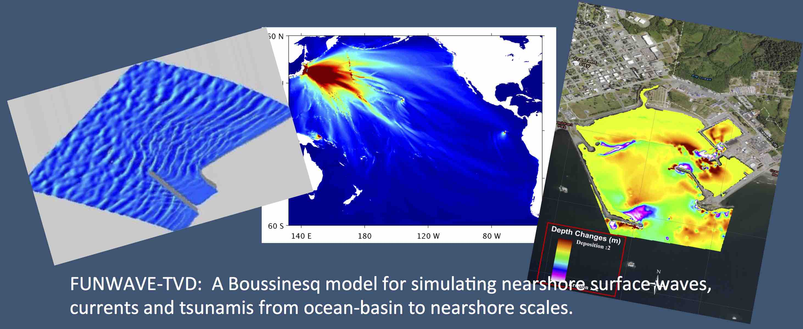

FUNWAVE-TVD¶
FUNWAVE–TVD is the Total Variation Diminishing (TVD) version of the fully nonlinear Boussinesq wave model (FUNWAVE) developed by Shi et al. (2012). The FUNWAVE model was initially developed by Kirby et al. (1998) based on Wei et al. (1995). The development of the present version was motivated by recent needs for modeling of surfzone–scale optical properties in a Boussinesq model framework, and modeling of Tsunami waves in both a global/coastal scale for prediction of coastal inundation and a basin scale for wave propagation.
This version features several theoretical and numerical improvements, including:
{kind=link}
A more complete set of fully nonlinear Boussinesq equations;
Monotonic Upwind Scheme for Conservation Laws (MUSCL)–TVD solver with adaptive Runge–Kutta time stepping;
Shock–capturing wave breaking scheme;
Wetting–drying moving boundary condition with incorporation of Harten-Lax-van Leer (HLL) construction method into the scheme;
Lagrangian tracking;
Option for parallel computation.
Subscribe¶
Stay connected to the global FUNWAVE community by subscribing to the mailing group. Submit general or specific questions to new and experienced users alike to solve problems and enhance solutions.
| Subscribe to FUNWAVE-TVD mailing group |
| Visit this group |
Stay up-to-date on the latest video tutorials and examples on YouTube by subscribing to FUNWAVE Tutorials and Fengyan Shi.